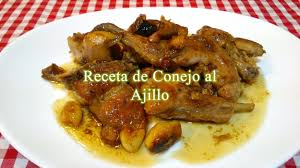

Conejo al ajillo
Una de las formas más tradicionales de preparar el conejo está en cocer con abundantes ajos

Ingredientes:
- 1 conejo
- 1 cabeza de ajos
- 1 vaso de vino blanco
- Aceite
- Sal
Elaboración:
Primero partimos el conejo en trozos pequeños y los ponemos a freir en un sartén con abundante aceite, a fuego lento. Le añadimos el vino y esperamos a que se dore.